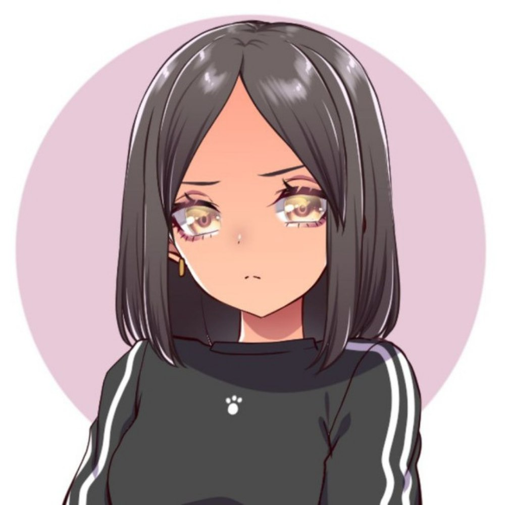
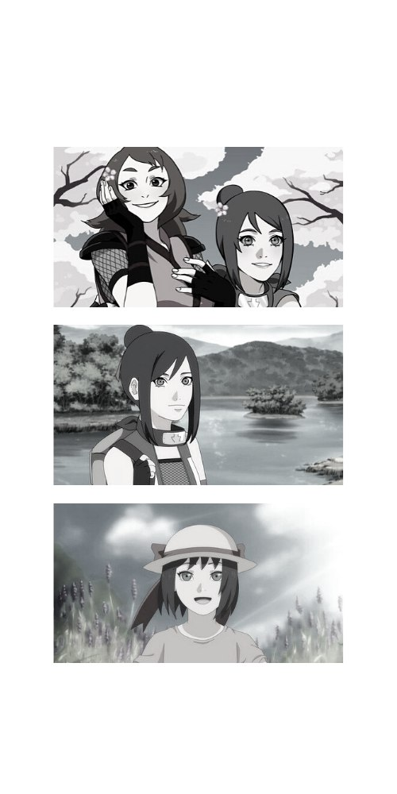
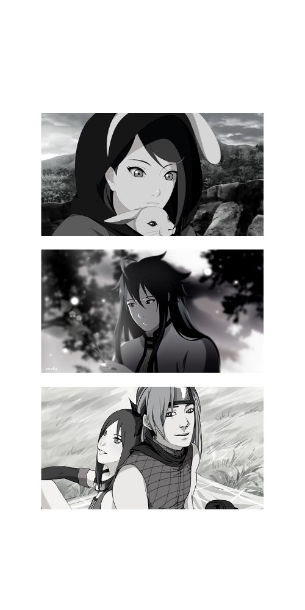

Naruto RPC

NARUTO OC FC RPC — это уже неновое явление в сфере аниме и манги. Подобные сообщества созданы для собрания и объединения фанатских идей по той или иной Вселенной. В данном конкретном случае по вселенной культовой манги Масаси Кисимото — "NARUTO". Мы не призываем фанатов рушить или искажать авторскую Вселенную, мы всего лишь объединяем людей, которые были вдохновлены темой шиноби и создали своих персонажей в существующем мире, не разрушая, а дополняя его.
